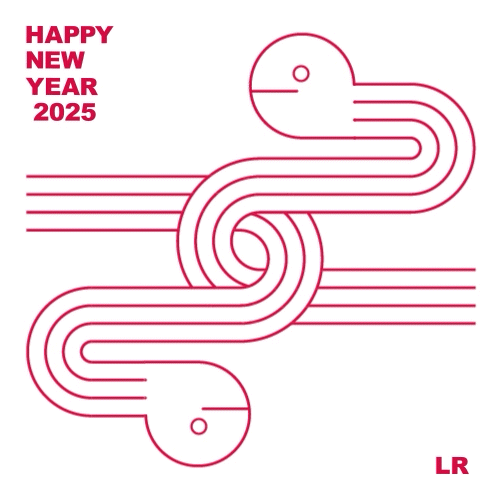
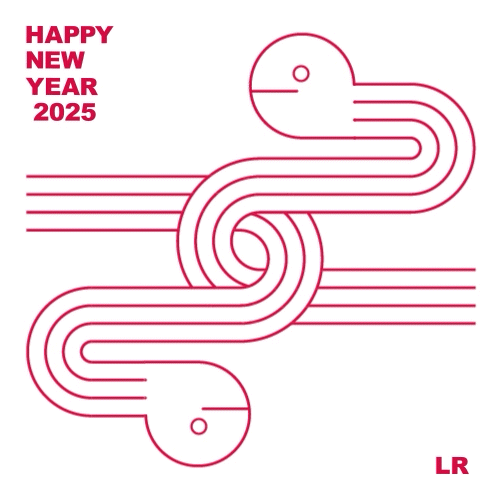

Product design
2025年度年賀状
2025年巳年の年賀状のデザイン。取引先とのつながりを今年も大切にしていきたいという願いを込めて、2匹のヘビが水引のように結ばれているビジュアルを作成。

 

↑紙の年賀状だけでなくメールでのやり取りも考慮し、 動画版のビジュアルも作成。
Product design 2
2024年度カレンダー
理系大学・研究所での展示を仮定したカレンダー。生物の体細胞をグラフィックで表現し、「伊東屋」とのコラボを想定して、企業ロゴも加えている。


細胞分裂の「結びつき感」を演出させるため、紐付きのボタン式封筒を用いたデザインになっている。
Package design
日本茶「禅」
観光地で展開予定の海外観光客向けの日本茶のパッケージデザイン。ロゴは畳を、正円は枯山水をイメージし、寺院での座禅を想像させている。


左から緑茶、ほうじ茶、黒豆茶の3種類の展開になっており、ティーパックは各6つずつ入っている。

海外観光客に和紙の手触りの良さを伝えるため、祝儀袋のような「包む動作」を取り入れている。
Package design 2
お香（コーンタイプ）
和をコンセプトに、生活雑貨を販売するショップの商品を仮定した、お香のパッケージデザイン。日本の地名や時代をテーマにデザインを展開している。


口はお香が1~2個出るくらいの大きさにし、片手で中身が取り出せるデザインになっている。

5種類の展開で、それぞれのテーマに沿って配色が異なる。